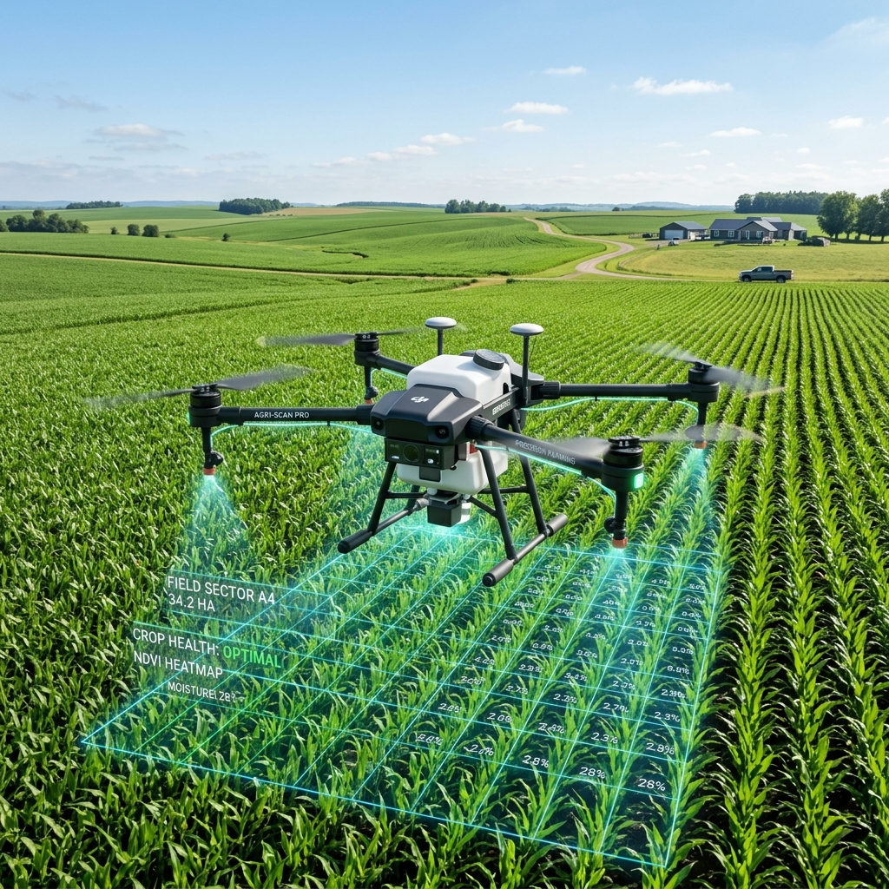
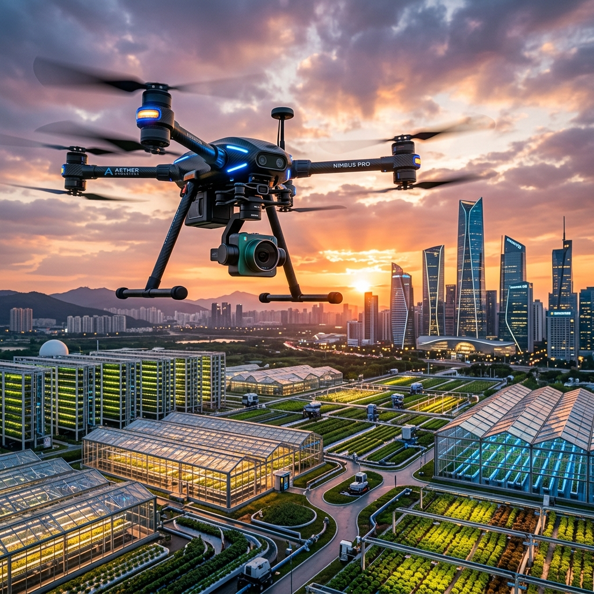
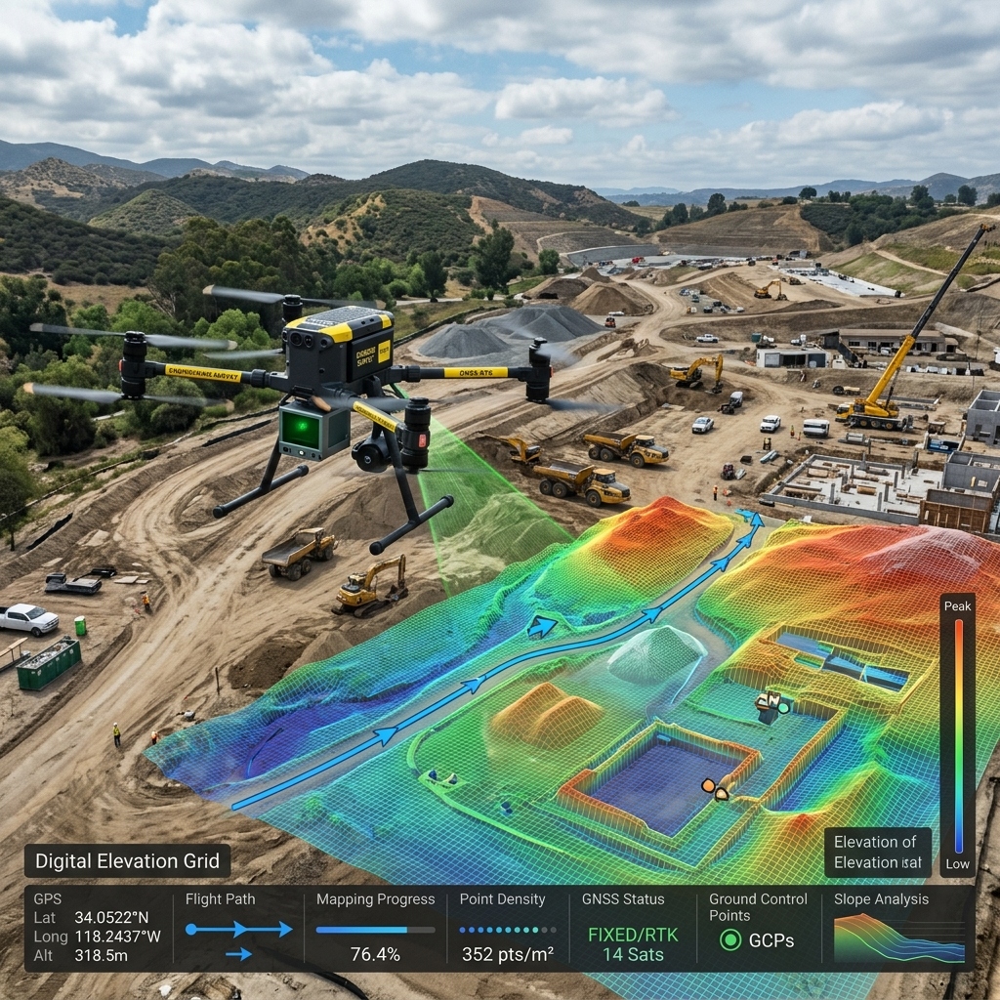

Atendimento especializado em Formosa-GO e região por Marco Antonio e Joao Marcello. Tecnologia avançada de aplicação com Zero Amassamento, máxima precisão e rentabilidade comprovada para sua lavoura.

Nossa operação agrícola é focada nos 4 pilares fundamentais para o sucesso do produtor rural.
Redução drástica do desperdício de insumos, pesticidas e fertilizantes. Economia real por hectare aplicado.
Velocidade e uniformidade na dispersão e pulverização, cobrindo áreas complexas com máxima agilidade.
Mapeamento de gota ideal, voos com tecnologia RTK/GNSS para aplicação localizada sem sobreposição.
Eliminação total das perdas de safra causadas pelo rastro dos tratores tradicionais no meio do cultivo.
Soluções completas para agronegócio, topografia, loteamentos e infraestrutura.
Aplicação aérea uniforme de defensivos, fertilizantes, sementes e biológicos com gotas otimizadas e zero contato do maquinário com o solo.

MultiespectralAnálise multiespectral (NDVI / NDRE) para detectar estresse hídrico, deficiência nutricional e pragas antes de causarem prejuízo.

TopografiaModelos digitais de terreno (MDT), curvas de nível e ortomosaicos georreferenciados para demarcação de fazendas, obras e loteamentos.
Equipamentos de alta capacidade operacional homologados pela ANAC/DECEA.
Drones agrícolas de altíssima produtividade e capacidade para pulverização e dispersão de granulados/sementes em grandes extensões.
Alta capacidade de carga & vazão otimizadaEstação de controle avançada com planejamento de missão automatizado, conexão RTK e telemetria de alta precisão para mapeamento.
Precisão RTK & Planejamento de RotasPlataforma industrial para inspeções térmicas, aerofotogrametria de alta precisão e acompanhamento de obras.
Sensor Térmico IR & Zoom 23xDiferente do trator tradicional, o drone voa sobre a lavoura sem tocar no solo ou nas plantas. Isso evita o esmagamento da cultura, garantindo até 5% a mais de produtividade por hectare.
Nossa base principal é em Formosa-GO, atendendo todas as propriedades rurais e obras do Entorno do Distrito Federal, Brasília-DF, Planaltina, Cabeceiras, Vila Boa, Flores de Goiás e municípios vizinhos.
Realizamos a aplicação de defensivos líquidos, produtos biológicos, fertilizantes foliares, além da dispersão de sementes (como braquiária/cobertura) e granulados.
Você pode falar diretamente com nossa equipe técnica: Marco Antonio pelo WhatsApp (61) 99975-7738, Joao Marcello pelo WhatsApp (61) 99630-7456 ou através do e-mail oficial formodrones@gmail.com.
Solicite uma visita técnica ou tire dúvidas sobre a melhor solução para sua lavoura ou propriedade.
Formosa - GO & Região / Distrito Federal